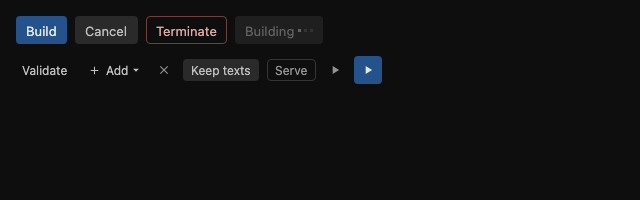
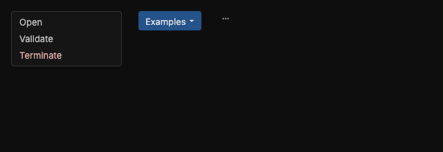
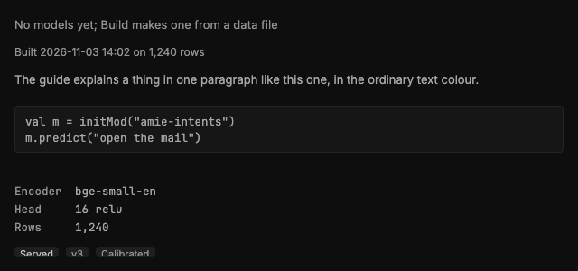
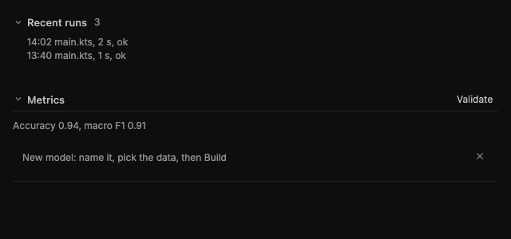
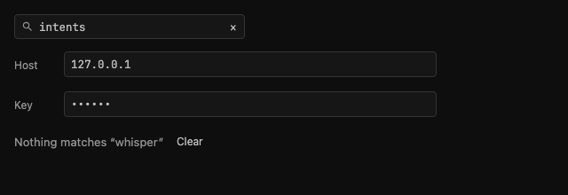
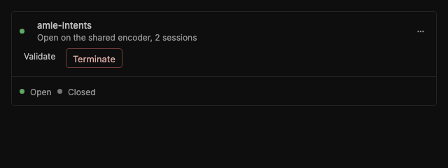
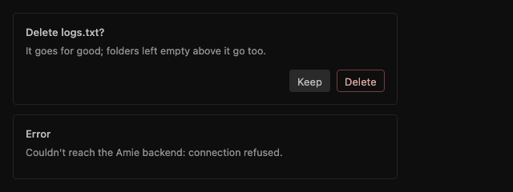
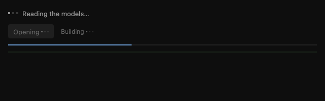

The components¶
The pieces every page is built from, each in a file of its own under
amieApplication/desktopApp/src/main/kotlin/org/example/project/components/ui/viewport/. Use one of these before
drawing anything of your own: a page that needs a button, a menu, a hint, a fold or a two-pane layout takes it from
here, so every page looks and behaves the same. The pictures come from ui/ComponentShotsTest.kt, which draws each
family with plain data (AMIE_COMPONENT_SHOTS=<dir> writes them; the test runs without it).
The rules they all follow are in LONG_RUN_PROMPT.md, Appendix C: flat, square (4px corners), muted colours from
ui/theme/Color.kt, a tooltip on every control, text with a capital first letter and never in capitals.
Colour¶
Every colour is a token of ui/theme/Color.kt; no page names one of its own. The chrome is neutral gray, three steps
darker than the JetBrains dark theme, and three hues sit on it as accents, never as floods:
| Token | Hue | For |
|---|---|---|
AccentColor (PageAccent, AddButton) |
Dark blue | The fill of the one primary action per place, light words on it (OnPrimaryColor) |
AccentInk (AccentLine, FocusRingColor, TabActiveIndicator, PanelEdgeSelected, ActiveColor, LinkColor) |
Blue | Lines and words that mark what is chosen, focused or under way: the focus ring, a focused field's border, the open tab's bar, a selected row's edge, a link, the line of a build or a download |
AccentWash (PanelSurfaceSelected, CompletionSelected) |
Blue, faint | What is selected sits on it: a row, the open page in the sidebar, the lit line of a list; EditorSelection is the editor's own, a step stronger |
SuccessColor (RunIconColor) |
Green | What runs, succeeded or is done: a status mark, the Run icon, the bar of a notice that ended well |
DangerColor (StopIconColor, the DangerButton tones) |
Red | What ends, removes or failed |
A hover is a gray shade (HoverOverlay, SurfaceHover), never the wash: blue says chosen, not pointed at. ContrastTest
holds every pair in use (words 4.5:1, marks 3:1) and checks that the accents are blue and green and the chrome's grays
neutral, so a colour used on a new surface is added there.
Buttons and switches: Controls.kt¶

| Component | For | Use it when |
|---|---|---|
AccentButton(label, tip) { } |
The one primary action of a place: Build, Run, Save. The only filled button, dark blue | A place has one action that matters most; never two accents side by side |
SecondaryButton(label, tip) { } |
The neutral action beside an accent or a danger button: Cancel, Keep | The person can back out, or there is a second way that changes nothing |
DangerButton(label, tip) { } |
What ends or removes something: Terminate, Delete, Destroy. Outlined in red | The action cannot be undone or ends a session; the menus colour the same words red |
SmallButton(label, tip, icon, arrow) { } |
The small ghost button for everything else: Validate, Add, Show the rows | An action of a row or a header; arrow = true when it opens a menu |
CloseButton(tip) { } |
The ✕ that closes a panel or a form; an ordinary ghost, never red | Closing ends nothing |
Toggle(label, on, tip) { } |
What is on or off: Keep texts, Serve | A setting with two states; outlined draws a border where it stands alone |
IconChip(icon, tip) { }, AccentIconButton(icon, tip) { } |
A small square with only an icon: the sandbox's Run, Stop and export (16px outlined icons, iconSize = 16.dp), a filter's clear |
There is no room for a word and the tip says what it does |
A button whose work is running reads as its own word with an ellipsis, Building…, is disabled until it is done and
draws the loading dots after the word (BusyLabel, in Loading.kt).
Menus: Menus.kt¶

| Component | For | Use it when |
|---|---|---|
MenuBox(items) { close } |
The dark box with one line per action, the ending ones (Terminate, Delete, Remove, Stop, Detach) in red | A right-click or a ⋯ opens the actions of an item; MENU_HEADING starts a line that only names a group |
DropButton(label, items, tip) |
A button that opens a MenuBox under itself, right edges aligned (BelowButton) |
A list of things to pick from, as the sandbox's Examples |
MoreButton(items) (in Panels.kt) |
The ⋯ at the right of a detail header, with the same actions a right-click opens | A detail panel has actions beyond its buttons |
A page that wants the keyboard back after a menu closes gives a MenuWatcher through LocalMenuWatcher.
Tooltips: Tooltip.kt¶
AppTooltip(text) { content } shows a short explanation under the pointer after it rests half a second on the
content: what a button does, or what a tab holds. Every control above takes its tip and wraps itself in one; use it
directly for anything else that needs a word, such as a status dot or a tab. A null text shows the content as it is.
Text pieces: Texts.kt¶

| Component | For | Use it when |
|---|---|---|
Hint(text) |
One muted line that says what is going on or what to do: "No models yet; Build makes one" | A list or pane has nothing to show, or something needs a word of guidance |
Meta(text) |
One small muted line of facts: when it was built, on how many rows | Facts under a name or a title |
Para(text) |
A paragraph of the guide in the ordinary text colour | Explaining something in full sentences |
Lines(vararg lines) |
A few lines a script would hold, in the console's box so they can be selected and copied | Showing code the person may copy |
KeyValues(pairs, tips, varying) |
Aligned key: value lines in monospace; keys in varying are marked as of this run |
Details of a model or a session |
BadgeLabel(text, strong) |
A small label on a faint square: Served, v3, Calibrated | A state worth a glance in a list row |
Modifier.variesByRun() |
Marks what differs from run to run, so a screenshot compare skips it | A time, a count or a memory figure in a page the harness photographs |
Sections and folds: Sections.kt¶

| Component | For | Use it when |
|---|---|---|
Fold(title, count, open, key) { } |
A section that opens on click: chevron, title and count in the header | Content worth hiding by default, as the sandbox's Recent runs; openNow opens it from elsewhere |
Section(title, key, actions) { } |
A block of a detail tab: the title on a line that folds it away (open by default), a rule, the content | A tab holds several blocks, each with a name |
FormHeader(hint, onClose) |
The first line of a form: what the form does and the ✕ that leaves it | A form opens inside a page, as New model does |
Fields: Fields.kt¶

| Component | For | Use it when |
|---|---|---|
SearchField(value, tip, list, name) { } |
A one-line filter over a list: icon, text and a clear button once there is text | A list is long enough to filter; list = true for the one ⌘F reaches |
SettingField(label, value, tip, masked) { } |
A labelled one-line input: Host, Port, a key (masked) |
A setting the person types |
NoMatches(query) { clear } |
Says a filter left nothing, with the query, and clears it | Under a filtered list that is empty |
Panels and the detail layout: Panels.kt¶

| Component | For | Use it when |
|---|---|---|
DetailPanel { } |
The bordered panel of the selected item, at the right of a list | A page is a list and the detail of what is selected (Models, Packages, Sessions, Settings) |
DetailHeader(name, active, status, statusTip, menu) { actions } |
Name and status on the left, the actions on the right (or under, when narrow), then the ⋯ menu | The first thing in a DetailPanel |
StatusMark(active, tip) |
A 7dp dot: green while active, gray when not | A row or a header says whether something runs |
ListRow (in Panels.kt) |
A row of a list: its icon, name, meta line and status; selected, it sits on the blue wash with a blue edge | Every list of the Models page |
VerticalSeparator(onWidth) |
The rule between the list and the detail, dragged to change the split | Between the two panes |
Dialogs: Dialogs.kt¶

| Component | For | Use it when |
|---|---|---|
ConfirmBox(title, confirm, onConfirm, onKeep, text, keep) |
A question that stands in the page, under what it is about: Keep first, the action last | Before anything that cannot be undone |
DialogCard(title, text) { buttons } |
The shared card: a title, a line under it, the buttons at the right | Any message that stops the person |
ErrorDialog(title, message, onDismiss) |
The card floating over the window with one OK | An error the person must see before going on |
They share one width (DialogWidth), one title line and one button height, checked by ui/DialogShotsTest.kt.
Loading: Loading.kt¶

The one way the app waits. Nothing in it shows before about 150 ms have gone by, so a fast read never flickers.
| Component | For | Use it when |
|---|---|---|
Loading(text) |
The place of a pane or a list that is still reading: the dots and words saying what is waited for | State that starts null or empty and is filled by a LaunchedEffect or a poll; a list says "Reading the models…" until its first read, never "No models yet" |
LoadingContent(loading, text) { } |
Crossfades from the wait to the content once it is there | A pane whose content replaces the wait in one piece |
BusyLabel(label, color) |
A button's or a row's label while it works, the dots alive after the word | The four text buttons draw their label with it: a label that starts with an -ing word and ends in … ("Opening…", "Reading the queue…") is busy by itself. Any other ellipsis says a dialog follows ("Fine-tune on file…", "Export…") and is drawn still (isBusyLabel) |
LoadingDots(color, size) |
The dots alone | A line of the console (its last line while the run is busy, when it ends in …) or a strip |
ProgressLine(fraction, color) |
The thin two-dp line of a run or a build: filled to fraction, or sweeping when the work can't say how far it is |
Under the console strip, the build line of the Models list, a package being added |
Every wait in the app uses these: the lists of the Models page before their first snapshot, the sandbox's editor and Recent runs before their files are read, the console while a text model loads or the builder embeds and fits, the settings' file tree, the package repository's search, and the window before the sandbox has taken over.
The frame of the window¶
| Component | File | For |
|---|---|---|
NavigationSidebar(...) |
NavigationSidebar.kt |
The column at the left of every page: the sandbox, the models page, the settings gear and the page's own tools, each a SidebarItem with its tip |
WindowHeader(name, onBack) { tools } |
WindowHeader.kt |
The window's top bar, which is the page's toolbar: back, the page's tools (the sandbox's script and Run, the Models tabs, the Settings sections), an optional add button and the window controls (on a Mac room for the system's three instead); it is the drag area, with no title. BarTab is a tab in it |
StatusStrip() |
StatusStrip.kt |
The strip at the foot: the process's memory, the heap and the encoders in memory, read every two seconds while it shows |
ThinScrollbar(scroll) |
ThinScrollbar.kt |
The thin bar at the side of what scrolls, dim until the pointer is on it |
Modifier.tracksFocusVisibility, FocusRing |
FocusRing.kt |
The 1dp ring a control shows while the keyboard put the focus on it |
LocalAppChrome |
AppChrome.kt |
What the window gives the header: the drag area, the window controls, and systemControls when the system draws its own |
The lists of the device dashboard (DataEntryList.kt, EndpointEntryList.kt, DevicePanel.kt) are of that page
alone and are not reused.
Beyond the viewport¶
- Helpers under
components/terminal/window/controller/util/:Desktop.kt(chooseFile,openInBrowser,openFile) andNumbers.kt(fmt,pct) are the plain functions pages share; they draw nothing. - The console (
console/), sessions (modules/ModelSessions.kt,tabs/SessionsTab.kt) and the script API (initMod,sessionMod,ortClosableinscript/ScriptLogger.kt) are documented where they live, with KDoc on every member a script can call; Scripting API lists them for a script writer.